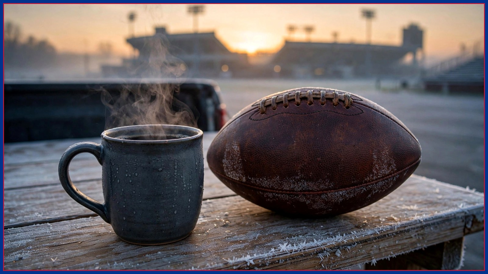

BNC Daily Links: the bye week is over, Ravens week is here
Your Monday morning roundup: Lamar watch begins, the trade deadline series launches, a Cook stat worth your coffee, and everything else Bills fans need to start Ravens week.

Good morning, Bills Country. The bye week is in the rearview, Buffalo sits at 5-1, and the Ravens come to Highmark Stadium on Sunday, Nov. 1 at 1 PM ET. Here's everything you need to start the week, in the order you'll argue about it.
THE LAMAR WATCH. All eyes are on Baltimore's quarterback situation. Reports this week have pointed toward Lamar Jackson returning after missing time — but Jackson himself said earlier this month that he'd be restricted, and the official answer doesn't arrive until Sunday's inactives. Our top story today breaks down why a limited Lamar might quietly be great news for Buffalo.
THE FILM ROOM IS OPEN. Dre leads his Film Room debut with the number nobody's talking about: James Cook, 5.34 yards per carry, 627 rushing yards. If you read one thing before Sunday, make it that — it's the stat Baltimore's defense has to solve first, before it even gets to Josh Allen.
TRADE DEADLINE SEASON. The Nov. 10 deadline is two weeks out, and our five-part board series starts today with the secondary. Buffalo's cap room is tight — roughly $4.1 million by the numbers floating around the league — so this series is about fits, not fantasies. One name a day, starting this afternoon.
ON THE INJURY AND DISCIPLINE FRONT. The C.J. Gardner-Johnson suspension was upheld, so he's out for the Ravens game and eligible to return Nov. 2 — plan the secondary conversation accordingly. Sam Franklin Jr., meanwhile, won his appeal and is cleared for Nov. 1. Both facts matter for how Jim Leonhard builds Sunday's game plan, and both are now settled, which is more than we could say a week ago.
FROM THE CULTURE DESK. Ally's column on DJ Moore lands today: a receiver who chose Buffalo, a fan base that adopts its players, and what has to happen off the field before the Moore era works on it. Moore's return from his shoulder sprain is still an "expected back" situation rather than a confirmed one — watch the practice reports Wednesday through Friday before you lock in your expectations either way.
AND FINALLY, THE FUN STUFF. The Tailgate's weekly disrespect rankings are live, and this week's No. 1 will start arguments. Friday brings our Ravens open thread and score-prediction poll. If you're new here, the BNC Blitz newsletter gets this roundup in your inbox every morning, free, plus subscriber-only giveaways. Sign up below — and welcome to Ravens week.